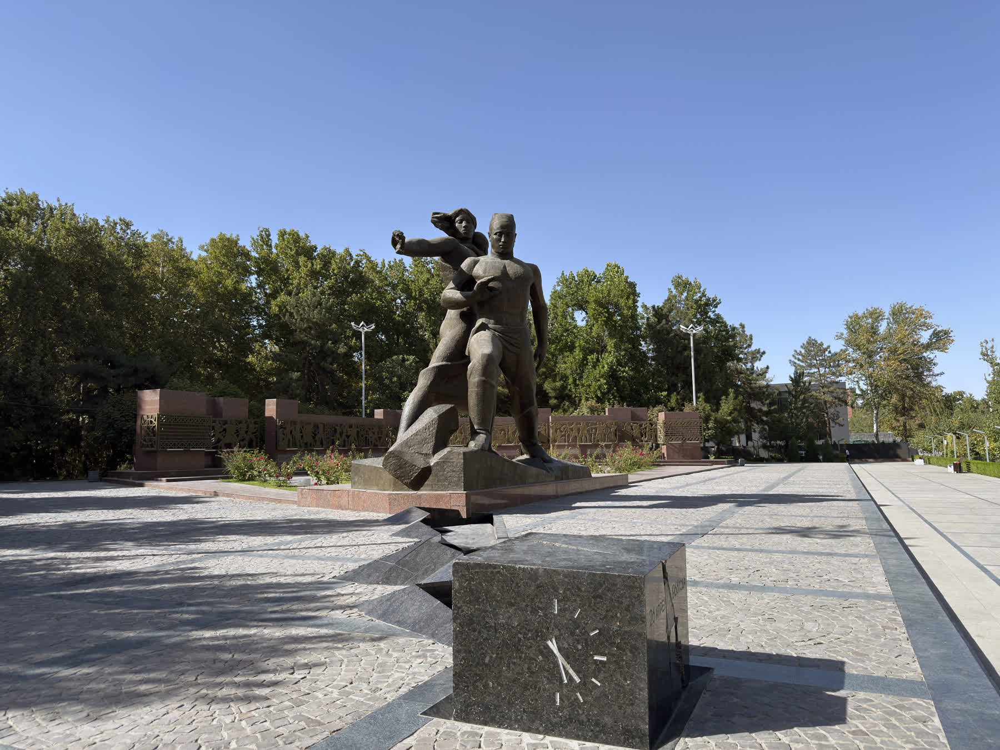

1966-yil Toshkent zilzilasi: shahar vayron bo‘ldi, butun Ittifoq qayta qurdi va aholi tarkibi o‘zgardi
1966-yil 26-aprel zilzilasi Toshkent markazini vayron qildi. Bu — zilzila, butunittifoq qayta qurilishi va shahar demografiyasining o‘zgarishini faktlar asosida izohlovchi tarixiy ma’lumotnoma.

1966-yil 26-aprel kuni erta tongda Toshkent markazida kuchli zilzila yuz berdi. Jonlar nobud bo‘lishi nisbatan kam bo‘lsa-da, shahar markazidagi minglab uylar vayron bo‘ldi va yuz minglab kishi uysiz qoldi. Keyingi yillarda Toshkent butun Sovet Ittifoqi kuchi bilan qaytadan qurildi va bu jarayon shaharning qiyofasini ham, aholi tarkibini ham o‘zgartirdi. Ushbu ma’lumotnoma zilzila, qayta qurilish va uning demografik oqibatlarini faktlar asosida izohlaydi.
Zilzila: sana, vaqt va kuchi
Zilzila 1966-yil 26-aprel kuni, mahalliy vaqt bilan taxminan soat 5:23 da yuz berdi. Epitsentr aynan Toshkent markazida, yer yuzasiga juda yaqin — taxminan 3–8 km chuqurlikda joylashgan edi. Zilzila kuchi manbalarga ko‘ra taxminan 5,2 magnitudani tashkil etgan (turli seysmologik manbalar 5,1–5,3 oralig‘ini keltiradi); epitsentr zonasida silkinish shiddati MSK shkalasi bo‘yicha VIII–IX darajaga yetgan. Bu kuchli emas, balki o‘rtacha quvvatli zilzila bo‘lib, uning vayronkorligi avvalo markazga yaqinligi (sayoz chuqurlik) va eski shahardagi paxsa (loy-g‘isht) uylar tufayli yuz berdi (Manba: seysmologik va tarixiy manbalar).
Qurbonlar va vayronagarchilik
Shunday kuchli vayronagarchilikka qaramay, halok bo‘lganlar soni nisbatan kam — turli manbalarga ko‘ra taxminan 8 dan 15 gacha (ayrim baholarda bundan ko‘proq) edi. O‘lim kamligi zilzilaning sayoz chuqurligi va eski shahardagi uylarning asosan bir qavatli, past bo‘lgani bilan izohlanadi. Biroq uy-joyga yetkazilgan zarar ulkan bo‘ldi: turli manbalarga ko‘ra 78 mingdan 95 minggacha uy vayron bo‘ldi va 200 mingdan 300 minggacha kishi boshpanasiz qoldi; eski shaharning yarmidan ko‘pi qulagan paxsa uylardan iborat edi (Manba: tarixiy manbalar; raqamlar bo‘yicha manbalar biroz farq qiladi).
Butunittifoq qayta qurilishi
Sovet hukumati keng ko‘lamli, butunittifoq qayta qurish ishini tashkil etdi: qurilish brigadalari va mutaxassislar boshqa sovet respublikalaridan hamda Rossiyaning yirik shaharlaridan Toshkentga keldi. Shahar bir necha yil ichida tez sur’atda qayta qurildi — bir manbaga ko‘ra 1970-yilga kelib 100 mingga yaqin yangi uy barpo etildi. Markaz zamonaviy sovet turar-joy massivlari (mikrorayonlar), keng ko‘chalar va zilzilabardosh me’moriy yechimlar bilan qayta tiklandi; Chilonzor kabi yangi yirik turar-joy massivlari shu davrda bunyod etildi (Manba: tarixiy manbalar). Qayta qurilish Sovet targ‘ibotida “xalqlar do‘stligi”ning namoyishi sifatida ulug‘landi.
Toshkent metrosi va “Jasorat” monumenti
Qayta qurilishning ramzlaridan biri Toshkent metrosi bo‘ldi: birinchi — Chilonzor yo‘nalishi qurilishi 1972-yilda boshlanib, 1977-yil 6-noyabrda ochildi; bu Markaziy Osiyodagi birinchi metro edi va qisman seysmik barqarorlik hisobga olib qurildi (Manba: tarixiy manbalar). Zilzila va qayta qurilish xotirasiga 1976-yilda (zilziladan o‘n yil o‘tib) shahar markazida “Jasorat” (ruscha “Mujestvo”) monumenti o‘rnatildi; muallifi haykaltarosh Dmitriy Ryabichev. Yodgorlikda yoriq bilan ikkiga bo‘lingan qora granit kub zilzila sanasi va vaqtini — 1966-yil 26-aprel, 5:23 ni ko‘rsatib turadi; uning yonida ayol va bolani panalagan erkak tasvirlangan bronza haykal guruhi joylashgan (bu monument ushbu maqolaning asosiy suratida aks etgan).
Aholi tarkibining o‘zgarishi
Zilzila va qayta qurilish Toshkent aholisi tarkibini ham o‘zgartirdi. Ko‘plab qurilishchi va mutaxassislar ish tugagach ham Toshkentda qolib ketdi; bu shaharda rus/slavyan va boshqa nooziyolik aholi ulushining oshishiga va shaharning yanada ko‘pmillatli bo‘lishiga olib keldi (Manba: tarixiy manbalar). Ayni paytda eski shahar (mahalla) aholisining bir qismi shahar chekkasidagi yangi mikrorayonlarga — ayniqsa Chilonzorga ko‘chirildi. Bu an’anaviy past qavatli mahalla hayotidan standart ko‘pqavatli sovet turar-joy massivlariga o‘tishni anglatib, an’anaviy mahalla ijtimoiy to‘qimasini o‘zgartirdi. Tarixchi Paul Stronski (“Tashkent: Forging a Soviet City, 1930–1966”) qayta qurilishni rejalashtiruvchilarga Toshkentni sotsializmning Osiyodagi namunaviy, “yuqori-modern” shahri sifatida qaytadan shakllantirishga imkon bergan hodisa sifatida tavsiflaydi.
Yetakchilarning tashrifi va targ‘ibot
Zilziladan keyin Sovet rahbarlari, jumladan KPSS Bosh kotibi Leonid Brejnev Toshkentga kelib, vaziyat bilan tanishdi (Manba: tarixiy manbalar). Qayta qurilish rasmiy Sovet targ‘ibotida barcha respublikalar birlashib “birodar shaharni” tiklayotgani — “xalqlar do‘stligi” g‘oyasining yorqin namunasi sifatida taqdim etildi. Bugungi kunda 26-aprel zilzilasi O‘zbekiston tarixidagi muhim sana sifatida eslanadi va “Jasorat” monumenti unga bag‘ishlangan asosiy yodgorlik hisoblanadi.